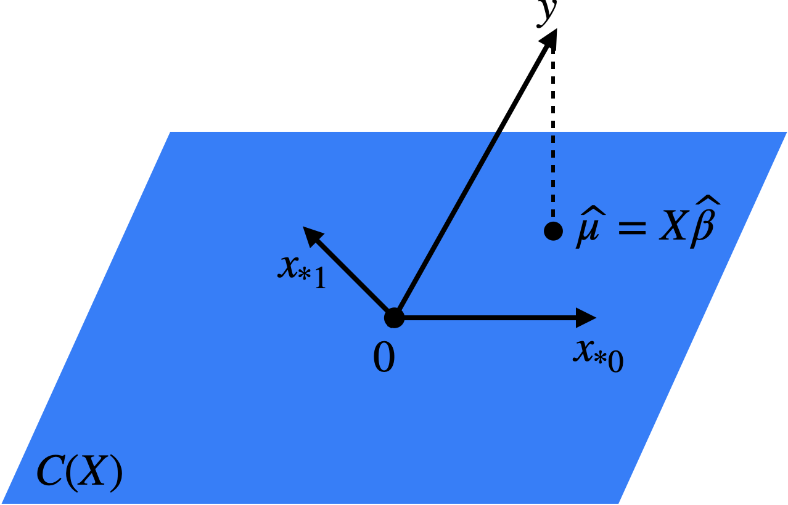

3 Least squares estimation
3.1 Algebraic perspective
See also Agresti 2.1.1, Dunn and Smyth 2.4.1, 2.5.2
Now, suppose that we are given a dataset \((\boldsymbol{X}, \boldsymbol{y})\). How do we go about estimating \(\boldsymbol{\beta}\) based on this data? The canonical approach is the method of least squares: \[ \boldsymbol{\widehat{\beta}} \equiv \underset{\boldsymbol{\beta}}{\arg \min}\ \|\boldsymbol{y} - \boldsymbol{X} \boldsymbol{\beta}\|^2. \] The quantity \[ \|\boldsymbol{y} - \boldsymbol{X} \boldsymbol{\widehat{\beta}}\|^2 = \|\boldsymbol{y} - \boldsymbol{\widehat{\mu}}\|^2 = \sum_{i = 1}^n (y_i - \widehat{\mu}_i)^2 \] is called the residual sum of squares (RSS), and it measures the lack of fit of the linear regression model. We therefore want to choose \(\boldsymbol{\widehat{\beta}}\) to minimize this lack of fit. Letting \(L(\boldsymbol{\beta}) = \frac{1}{2}\|\boldsymbol{y} - \boldsymbol{X} \boldsymbol{\beta}\|^2\), we can do some calculus to derive that \[ \frac{\partial}{\partial \boldsymbol{\beta}}L(\boldsymbol{\beta}) = -\boldsymbol{X}^T(\boldsymbol{y} - \boldsymbol{X} \boldsymbol{\beta}). \] Setting this vector of partial derivatives equal to zero, we arrive at the normal equations: \[ -\boldsymbol{X}^T(\boldsymbol{y} - \boldsymbol{X} \boldsymbol{\widehat{\beta}}) = 0 \quad \Longleftrightarrow \quad \boldsymbol{X}^T \boldsymbol{X} \boldsymbol{\widehat{\beta}} = \boldsymbol{X}^T \boldsymbol{y}. \tag{3.1}\] If \(\boldsymbol{X}\) is full rank, the matrix \(\boldsymbol{X}^T \boldsymbol{X}\) is invertible and we can therefore conclude that \[ \boldsymbol{\widehat{\beta}} = (\boldsymbol{X}^T \boldsymbol{X})^{-1}\boldsymbol{X}^T \boldsymbol{y}. \tag{3.2}\]
3.2 Probabilistic perspective
See also Agresti 2.7.1
3.2.1 Least squares as maximum likelihood estimation
Note that if \(\boldsymbol{\epsilon}\) is assumed to be \(N(0,\sigma^2 \boldsymbol{I_n})\), then the least squares solution would also be the maximum likelihood solution. Indeed, for \(y_i \sim N(\mu_i, \sigma^2)\), the log-likelihood is:
\[ \log \left[\prod_{i = 1}^n \frac{1}{\sqrt{2\pi\sigma^2}}\exp\left(-\frac{(y_i - \mu_i)^2}{2\sigma^2}\right)\right] = \text{constant} - \frac{1}{2\sigma^2}\sum_{i = 1}^n (y_i - \mu_i)^2. \]
3.2.2 Gauss-Markov theorem
Now that we have derived the least squares estimator, we can compute its bias and variance. To obtain the bias, we first calculate that:
\[ \mathbb{E}[\widehat{\boldsymbol{\beta}}] = \mathbb{E}[(\boldsymbol{X}^T \boldsymbol{X})^{-1}\boldsymbol{X}^T \boldsymbol{y}] = (\boldsymbol{X}^T \boldsymbol{X})^{-1}\boldsymbol{X}^T \mathbb{E}[\boldsymbol{y}] = (\boldsymbol{X}^T \boldsymbol{X})^{-1}\boldsymbol{X}^T \boldsymbol{X} \boldsymbol{\beta} = \boldsymbol{\beta}. \]
Therefore, the least squares estimator is unbiased. To obtain the variance, we compute:
\[ \begin{split} \text{Var}[\boldsymbol{\widehat{\beta}}] &= \text{Var}[(\boldsymbol{X}^T \boldsymbol{X})^{-1}\boldsymbol{X}^T \boldsymbol{y}] \\ &= (\boldsymbol{X}^T \boldsymbol{X})^{-1}\boldsymbol{X}^T\text{Var}[\boldsymbol{y}]\boldsymbol{X} (\boldsymbol{X}^T \boldsymbol{X})^{-1} \\ &= (\boldsymbol{X}^T \boldsymbol{X})^{-1}\boldsymbol{X}^T(\sigma^2 \boldsymbol{I_n})\boldsymbol{X} (\boldsymbol{X}^T \boldsymbol{X})^{-1} \\ &= \sigma^2 (\boldsymbol{X}^T \boldsymbol{X})^{-1}. \end{split} \tag{3.3}\]
3.3 Geometric perspective
See also Agresti 2.2.1-2.2.3
The following is the key geometric property of least squares (Figure 3.1).
Proposition 3.1 The mapping \(\boldsymbol{y} \mapsto \boldsymbol{\widehat{\mu}} = \boldsymbol{X}\boldsymbol{\widehat{\beta}} \in C(\boldsymbol{X})\) is an orthogonal projection onto \(C(\boldsymbol{X})\), with projection matrix
\[ \boldsymbol{H} \equiv \boldsymbol{X}(\boldsymbol{X}^T \boldsymbol{X})^{-1}\boldsymbol{X}^T \quad (\textit{the hat matrix}). \tag{3.4}\]
Geometrically, this makes sense since we define \(\boldsymbol{\widehat{\beta}}\) so that \(\boldsymbol{\widehat{\mu}} \in C(\boldsymbol{X})\) is as close to \(\boldsymbol{y}\) as possible. The shortest path between a point and a plane is the perpendicular. A simple example of \(\boldsymbol{H}\) can be obtained by considering the intercept-only regression.
Proof. To prove that \(\boldsymbol{y} \mapsto \boldsymbol{\widehat{\mu}}\) is an orthogonal projection onto \(C(\boldsymbol{X})\), it suffices to show that:
\[ \boldsymbol{v}^T (\boldsymbol{y} - \boldsymbol{X} \boldsymbol{\widehat{\beta}}) = 0 \text{ for each } \boldsymbol{v} \in C(\boldsymbol{X}). \]
Since the columns \(\{\boldsymbol{x_{*0}}, \dots, \boldsymbol{x_{*p-1}}\}\) of \(\boldsymbol{X}\) form a basis for \(C(\boldsymbol{X})\), it suffices to show that \(\boldsymbol{x_{*j}}^T (\boldsymbol{y} - \boldsymbol{X} \boldsymbol{\widehat{\beta}}) = 0\) for each \(j = 0, \dots, p-1\). This is a consequence of the normal equations \(\boldsymbol{X}^T(\boldsymbol{y} - \boldsymbol{X}\boldsymbol{\widehat{\beta}}) = 0\) derived in (3.1).
To show that the projection matrix is \(\boldsymbol{H}\) (3.4), it suffices to check that:
\[ \boldsymbol{\widehat{\mu}} = \boldsymbol{X}\boldsymbol{\widehat{\beta}} = \boldsymbol{X}(\boldsymbol{X}^T \boldsymbol{X})^{-1}\boldsymbol{X}^T \boldsymbol{y} \equiv \boldsymbol{H} \boldsymbol{y}. \]

Proposition 3.2 If \(\boldsymbol{P}\) is an orthogonal projection onto a subspace \(\boldsymbol{W}\), then:
- \(\boldsymbol{P}\) is idempotent, i.e., \(\boldsymbol{P}^2 = \boldsymbol{P}\).
- For all \(\boldsymbol{v} \in \boldsymbol{W}\), we have \(\boldsymbol{P}\boldsymbol{v} = \boldsymbol{v}\), and for all \(\boldsymbol{v} \in \boldsymbol{W}^{\perp}\), we have \(\boldsymbol{P} \boldsymbol{v} = 0\).
- \(\text{trace}(\boldsymbol{P}) = \text{dim}(\boldsymbol{W})\).
One consequence of the geometric interpretation of least squares is that the fitted values \(\boldsymbol{\widehat{\mu}}\) depend on \(\boldsymbol{X}\) only through \(C(\boldsymbol{X})\). As we will see in Homework 1, there are many different model matrices \(\boldsymbol{X}\) leading to the same model space. Essentially, this reflects the fact that there are many different bases for the same vector space. Consider, for example, changing the units on the columns of \(\boldsymbol{X}\). It can be verified that not just the fitted values \(\boldsymbol{\widehat{\mu}}\) but also the predictions on a new set of features remain invariant to reparametrization (this follows from parts (a) and (b) of Homework 1 Problem 1). Therefore, while reparametrization can have a huge impact on the fitted coefficients, it has no impact on the predictions of linear regression.